城市通勤
高频、短时、快速决策
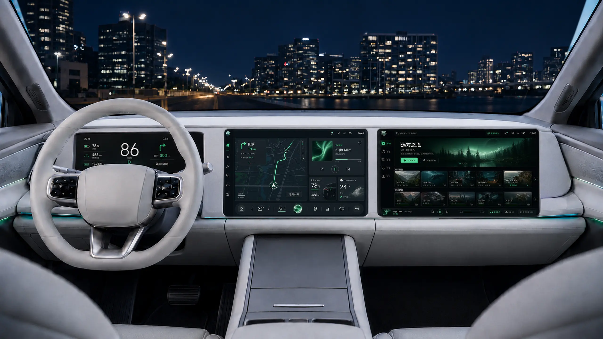
THE EXPERIENCE AT A GLANCE
仪表稳定呈现驾驶结论，中控完成高频控制与确认，副驾负责搜索和内容决策。 同一任务可以跨屏接续，但不会把相同界面复制三次。
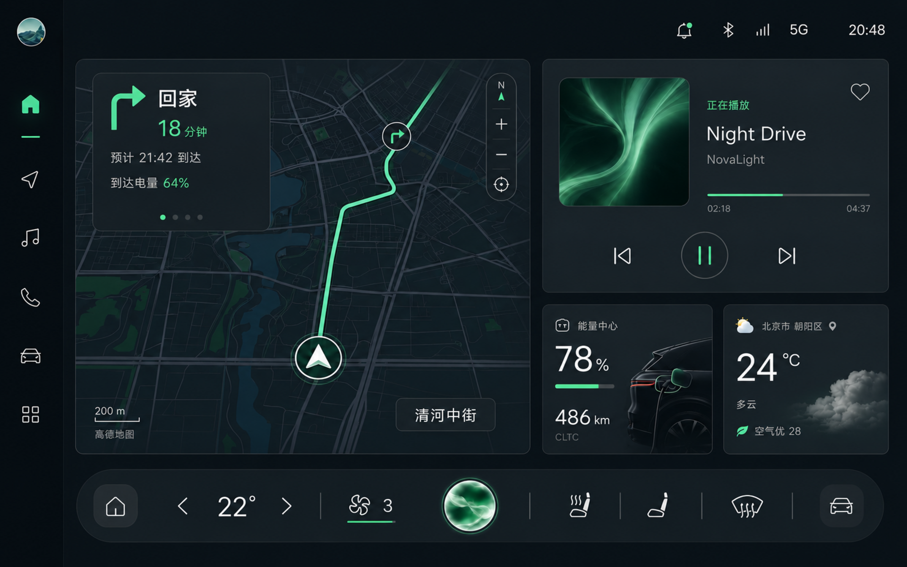
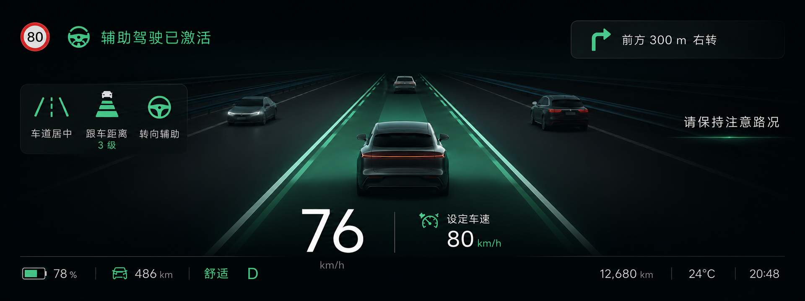
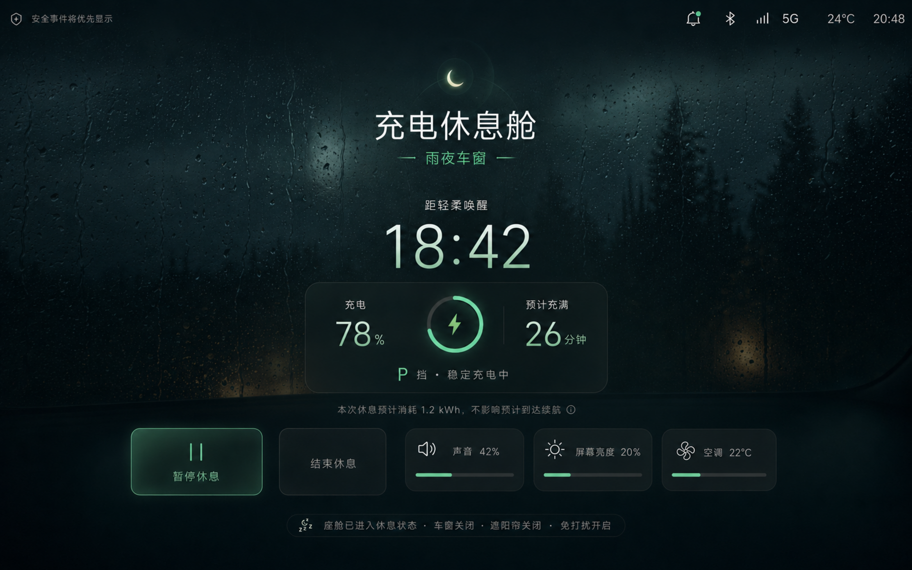
PROJECT CONTEXT
本项目并非复刻某一量产车型，而是基于公开车型资料、HMI 规范与典型家庭出行场景建立设计假设。
设计命题
高频、短时、快速决策
持续驾驶、注意力稀缺
多人协作、内容需求并行
车辆静止、体验状态切换
BENCHMARK TAKEAWAYS
兼容顶部状态、地图主内容与底部固定车控，减少浮层互相遮挡。
地图、媒体、能源和车控以卡片并置，降低驾驶中的层级跳转。
家庭座舱更需要明确角色分工，而不是把中控内容平移到副驾。
DESIGN CHALLENGE
页面越多并不代表体验越完整。真正的难点，是在多人、多屏与多状态之间重新分配注意力。
导航、车控与内容入口持续叠加，驾驶员需要在多个层级间寻找下一步动作。
仪表、中控与副驾各自拥有内容，却缺少明确的任务分工和接续反馈。
车辆状态已经改变，界面却仍停留在驾驶模式，没有自然过渡到休息场景。
DESIGN GOALS
设计目标不从视觉风格出发，而是直接回应驾驶扫视、跨屏协同与情境权限。
Glanceable
关键驾驶结论固定位置呈现，短暂扫视即可识别。
Connected
任务跨屏流动，但信息密度随屏幕角色自动收敛。
Contextual
行驶、驻车与充电状态共同决定内容和功能权限。
MULTI-SCREEN STRATEGY
同一任务跨屏接续，但每块屏幕只显示与自身视线、操作角色和安全等级相匹配的信息。
“副驾负责做选择，
中控负责做确认，
仪表负责给结论。”
给出驾驶结论
完成控制与确认
承担搜索与内容决策
CROSS-SCREEN JOURNEY
副驾承担复杂输入，中控保留一次确认，仪表只接收导航结论。任务在移动，注意力负担没有跟着移动。
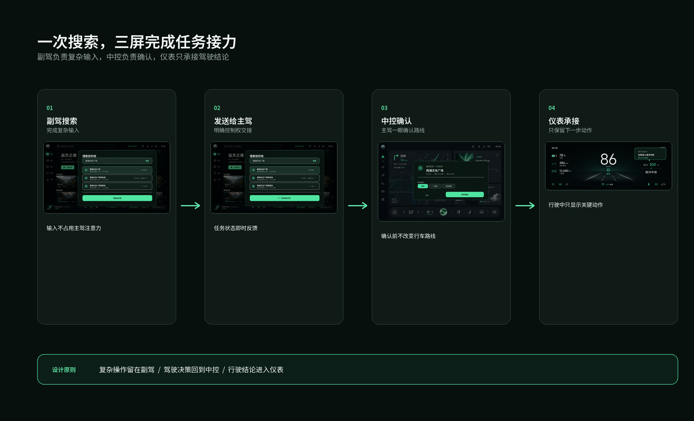
由副驾完成高输入复杂度的搜索和结果判断。
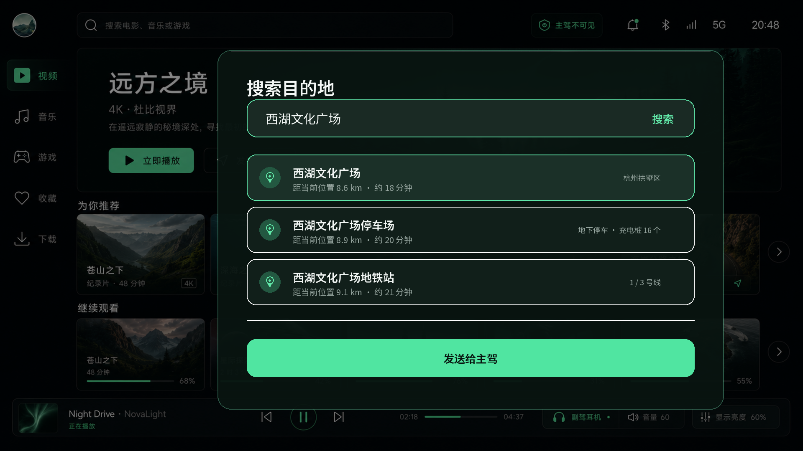
发送前明确显示“发送给主驾”，避免任务去向不清。

主驾只需确认是否开始，不重复阅读完整地点信息。
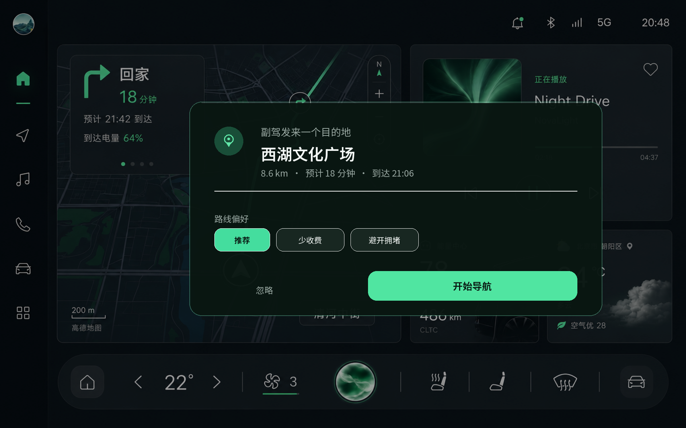
导航启动后，仪表仅保留下一转向与剩余距离。
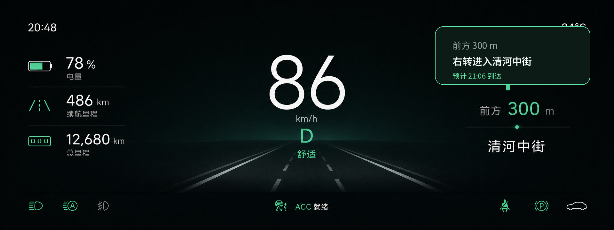
CHARGING REST CABIN
休息舱不是孤立的氛围页面。它从车辆进入 P 挡、建立稳定充电连接后开始，并在充电完成或定时结束时轻柔退出。
车辆静止并确认驻车
充电连接与能源状态正常
无高优先级故障与驾驶任务
由系统主动给出情境入口
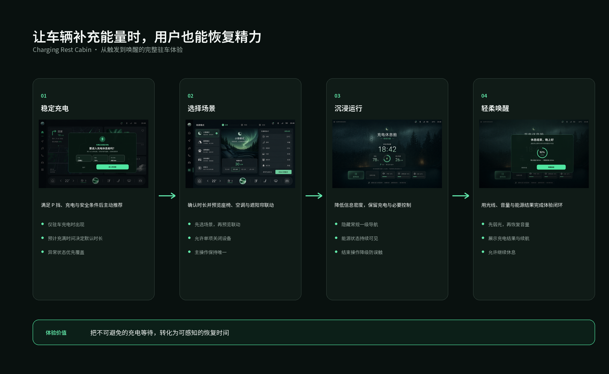
触发条件 → 场景配置 → 沉浸运行 → 轻柔唤醒
完成插枪并稳定充电后，系统以轻量卡片主动建议休息舱， 不打断用户继续查看能量信息。
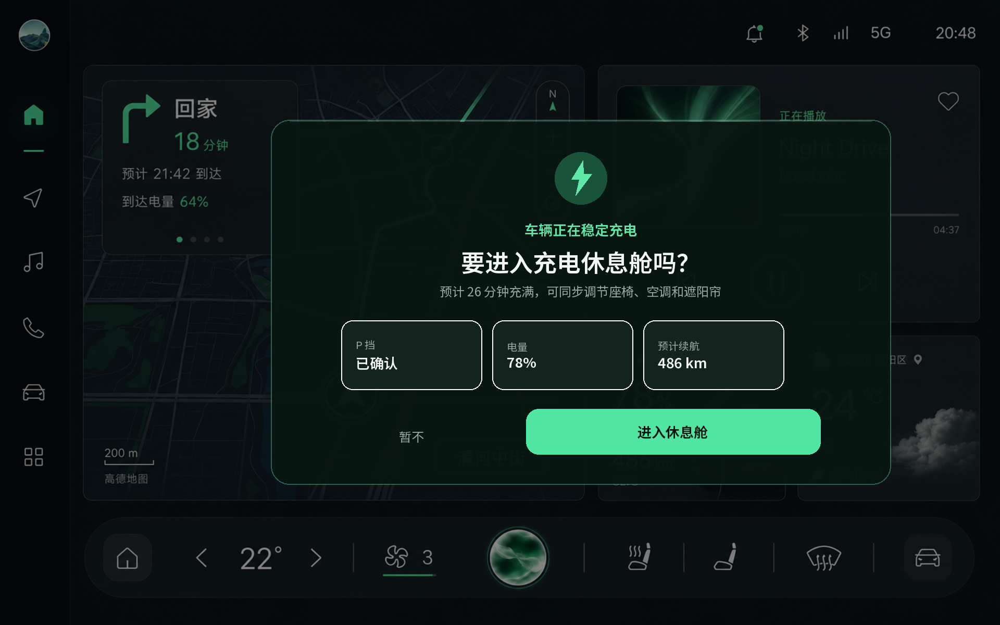
空调、座椅、氛围灯与唤醒时间在启动前一次确认， 避免进入沉浸模式后频繁返回设置。
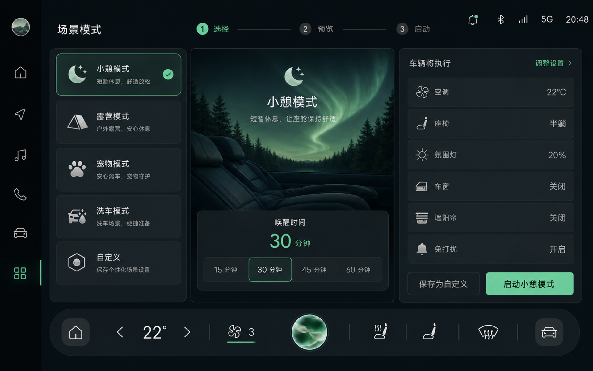
运行态隐藏常规导航与应用入口，只保留时间、充电进度和核心环境控制； 安全告警仍可覆盖沉浸内容。
充电完成或计时结束后先柔和提亮，呈现续航与舱内状态， 再让用户选择继续休息或返回座舱首页。
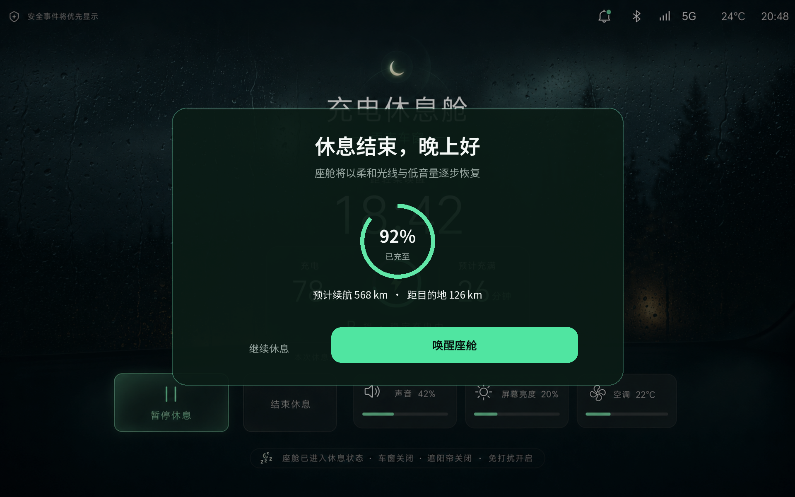
CORE SURFACES
八张核心界面按驾驶信息、导航与首页、媒体娱乐、场景与充电四组呈现。每组只强调最关键的设计决策。
车速永远位于稳定视觉中心。标准驾驶态减少环境渲染， ADAS 激活后才扩展车道、前车与辅助状态。
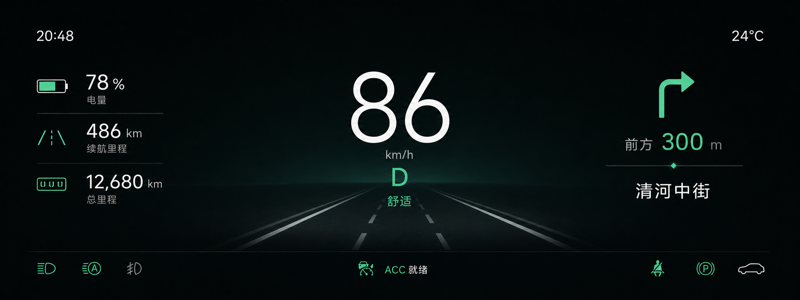
中控首页将地图作为最大主任务，并以右侧卡片承接媒体、能源与天气； 进入导航后，地图获得完整空间，但底部 Dock 始终保留。
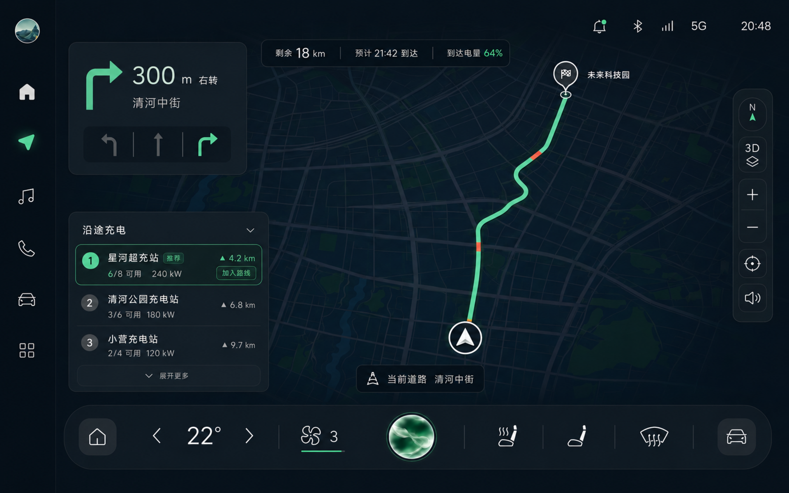
驾驶侧媒体强调当前播放与大热区控制；副驾屏则允许更高内容密度， 但不复用驾驶侧导航结构，并持续显示防窥和音频输出状态。
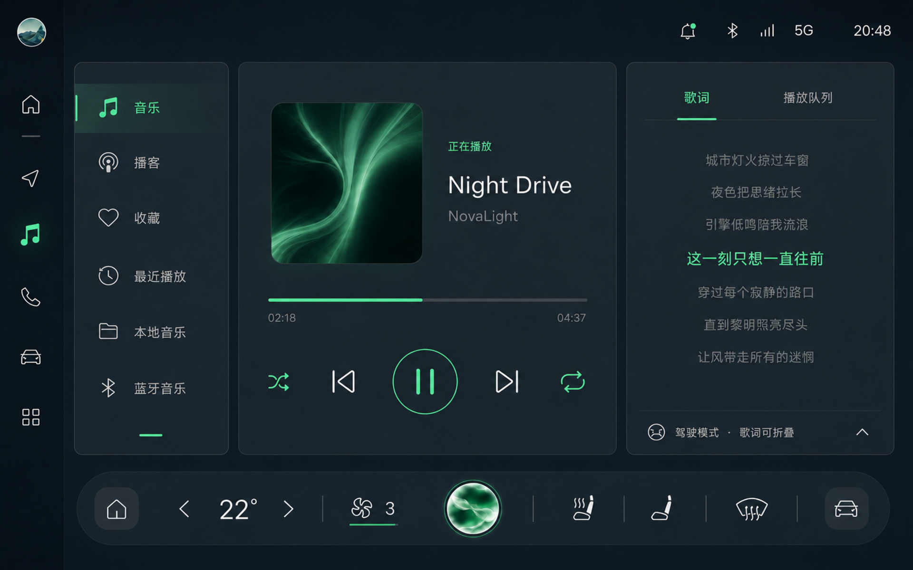
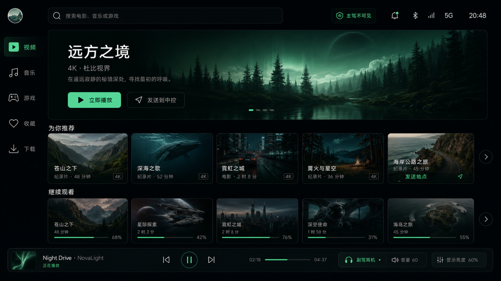
进入非驾驶状态后，界面从功能组织转向环境联动。 场景页负责预览与配置，休息舱负责安静运行。
SAFETY & EDGE STATES
安全提醒始终高于沉浸氛围与娱乐内容。正常激活、系统降级、用户接管以及强光环境，都需要被当作完整状态设计。
接管提醒不只把界面染红：它同时改变信息层级、缩减非关键内容， 并使用图形、文字和高对比色重复表达同一动作。
正常辅助：绿色、稳定、信息完整
能力降级：琥珀色、解释原因、准备接管
立即接管：红色、动作优先、压制次要信息
辅助驾驶已激活
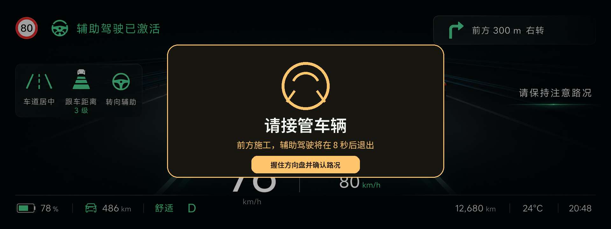
请立即接管车辆
DAY / NIGHT ADAPTATION
强光环境下减少透明叠层、提高文字与容器对比，保留相同信息架构和肌肉记忆； 夜间模式则降低大面积亮度，只在焦点和状态上使用绿色。
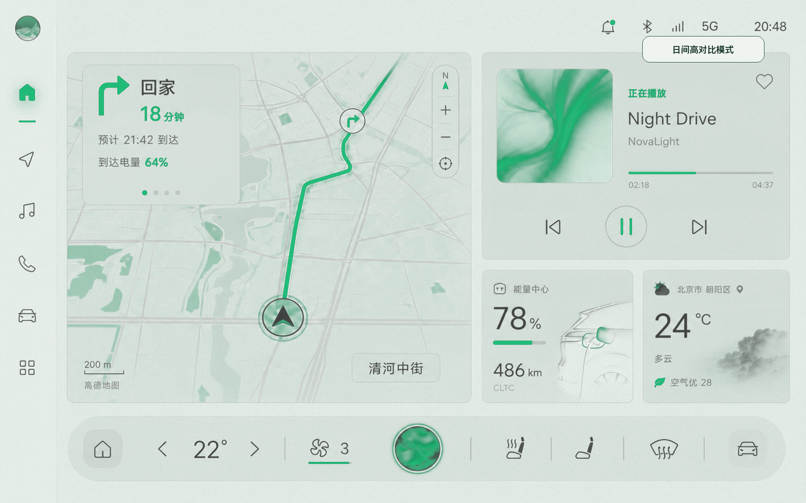
VISUAL SYSTEM
视觉以深墨色建立稳定底噪，以绿色表达激活、路径和环境光。所有驾驶态信息先满足可读性，再讨论氛围。
COLOR TOKENS
大面积容器保持中性深色，品牌绿用于主要动作、导航路径和激活状态； 警告色保留独立语义，不被品牌色覆盖。
驾驶核心数字使用高识别结构与固定位置。
TYPE & LEGIBILITY
单次短暂扫视即可识别关键状态。
高频控件靠近自然可达区并扩大热区。
状态不只依赖颜色，叠加文字与形态。
行驶、驻车、充电共同决定权限。
绿色像环境光一样局部出现。
DESIGN VALUE
先定义角色、权限与任务接力，再进入具体界面。
主动补全日间、接管、触发与退出状态，而非只展示最佳情况。
充电休息舱的沉浸感来自情境成立，而不是单独的视觉特效。